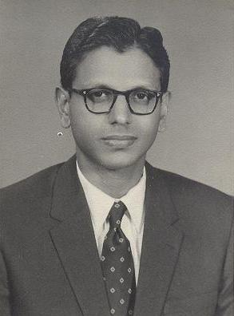

Prof. K.M. Karunakaran (1929-99), Former Head - Physics, MCC
Our alumni, all of them, who came back to the department for the nostalgia, evinced a keen interest to do something for the department from which they had evolved. One of the main objectives of the Physics Alumni Meet (PAM 2010), was to establish a structured connect with the department, a platform.
At the inaugural PAM meet on December 18, 2010, the then constituted panel formulated the forming of the Physics Alumni Society (PAS). At the subsequent early meetings of the executive committee, it was realized that many alumni expressed great interest and enthusiasm to establish an annual endowment lecture. This event would be a great value addition to the department's academic status. The students of MCC and other city colleges would be benefitted by the exposure to current topics, explained by experts in the respective fields.
| # | Donor | Batch |
|---|---|---|
| 1 | Prof. P.M. Mathews | 1947-52 |
| 2 | Prof. M. Lakshmanan | 1963-66 |
| 3 | Dr. S. Ravichandran | |
| 4 | Prof. N. Gautham | 1971-75 |
| 5 | Dr. Aruna Dhathathreyan | 1975-77 |
| 6 | Dr. Peter Jayapandian | 1962-64 |
| 7 | Dr. Amrutha & team | 1986-91 |
| 8 | Dr. N. Manju | |
| 9 | Dr. M.M. Govind | 1976-81 |
| 10 | Ms. Mary Agnes Joseph | 1978-80 |
| 11 | Dr. R. Balakrishnan | 1959-65 |
| 12 | Dr. N. Lakshminarayan | 1975-77 |
| 13 | Dr. R. Manickkavachagam | |
| 14 | Dr. P. Samuel Asirvatham | 1982-87 |
| 15 | Mr. Vijay Kumar Reddy | 1975-80 |
| 16 | Mr. A.P. Parthiban | 1975-80 |
| 17 | Mr. T.S. Krishnaswamy | 1975-77 |
| 18 | Dr. Vaidehi Ganesan | 1975-77 |
| 19 | Mr. Saravanan Kannan | 1990-95 |
| 20 | Mr. V. Badrinarayanan | 1992-95 |
| 21 | Mr. Mukundan Chakrapani | 1992-95 |
| 22 | Mr. Moses Mathuram | 1989-92 |
| 23 | Mr. C.N. Purushothaman | 1975-80 |
| 24 | Mr. R.G. Subramaniyan | 1956-59 |
| 25 | Mr. Kumar S. Rajeev | 1989-92 |
| 26 | Mr. Raguvir Gurumurthy | 1981-84 |
| 27 | Mr. G. Hariharan | 1990-92 |
| 28 | Mr. Satish Tavag | 1972-77 |
| 29 | Brig. V.A. Subramanyam | 1956-59 |
| 30 | Capt. Anand Jayaraman | 1987-90 |
| 31 | Mr. Cherian Thompson | 1974-77 |
| 32 | Mr. P. Sankara Narayanan | 1978-81 |
| 33 | Capt. E. Daniel | 1989-92 |
| 34 | Ms. Evanjilina Selvanathan | 1982-84 |
| 35 | Ms. Hepzi Sekar | 1999-02 |
| 36 | Prof. K.S. Venkatasubban | |
| 37 | Mr. Sam Muthiah Franklin | 1988-91 |
| 38 | Mr. Joseph George | 1988-91 |
| Donor | Batch |
|---|---|
| Mr. Vijay Reddy | 1975-80 |
| Mr. A.P. Parthiban | 1975-80 |
| Capt. E. Daniel | 1989-92 |
| Capt. Anand Jayaraman | 1987-90 |
| Mr. Anand Walser | 1988-91 |
| Mr. Bhaskar | 2001-04 |
| Ms. Mhona Russel | 2001-04 |
| Mr. Raguvir Gurumurthy | 1981-84 |
| Dr. Vigneswara Ilavarasan | 1992-95 |
| Batch 1992-95 | |
| Mr. Arul Chittaranjan Durairaj | 1981-84 |
| Mr. Cherian Thompson | 1974-77 |
| Mr. Dhanasekharan | 1982-85 |
| Dr. G. Kumar Sathian | 1965-70 |
| Dr. S. Narayan (IAS Retd.) | 1958-63 |
| Dr. N. Gautham | 1971-74 |
| Mr. Samuel Jayakaran | 1987-90 |
| Dr. N. Lakshminarayan | 1975-77 |
| Dr. R. Manickkavachagam | |
| Dr. Harish Srinivasan | 2009-12 |
| Ms. Sujatha | 1989-91 |
| Year | B.Sc. | M.Sc. | Total (₹) |
|---|---|---|---|
| 2017-18 | 6 | 1 | 35,000 |
| 2018-19 | 9 | 5 | 1,46,622 |
| 2019-20 | 7 | 3 | 1,36,671 |
| 2020-21 | 8 | 5 | 1,08,758 |
| 2021-22 | 6 | 6 | 1,48,401 |
| 2022-23 | 6 | 3 | 1,07,782 |
| 2023-24 | 9 | 2 | 1,46,060 |
| 2024-25 | 14 | 2 | 2,10,053 |
| 2025-26 | 13 | 6 | 3,74,377 |
Students of B.Sc. batch 1992-95, coordinated by Dr. Vigneswara Ilavarasan (Professor, IIT-D), came forward with an initiative to provide financial assistance towards the education of girl students in the Physics Department. This scholarship is provided every year since 2018.
The students of the 1981-84 batch, B.Sc. (Physics) instituted the Prof. K.M. Karunakaran Prize for Quantum Mechanics. This prize is awarded to the 3rd B.Sc. student who has excelled in Quantum Mechanics. This prize is being awarded every year from 2010.
The prize is awarded to the 2nd M.Sc. student who has excelled in Quantum Mechanics. This prize has been instituted, in 2019, solely by a lumpsum contribution of INR 1.00 Lakh from our Alumnus Prof. P.M. Mathews (1947-52), Senior Professor and Head (Retd.) - Department of Theoretical Physics, University of Madras.
Overwhelming and spontaneous contributions of many Alumni enabled the procurement of a GPU-enabled Workstation optimized to suit the requirements of the department.
Students of B.Sc. batch 1990-1993 (Coordinator: Mr. Saravanan Kannan) provided a 1.5 ton split air conditioner for the students' computer lab in the Physics Department.